Breakbeat music guide
What Is Breakbeat? A Guide to the Genre, History and Styles
From funk breaks and Bronx hip-hop to British rave, Florida, Andalusia, big beat, nu-skool and the broken club music being made now.
Breakbeat began with DJs refusing to let the best part of a record end. By extending the exposed drum sections of funk and soul records, they turned a few seconds of rhythm into a method: first for dancers and hip-hop, then for samplers, rave and whole club scenes.
This guide follows breakbeat as music and culture, not as a drum-programming lesson. Its route runs from funk breaks and Bronx DJ practice into British hardcore, American and Spanish regional scenes, big beat, nu-skool and today's looser breaks continuum. Jungle, drum and bass, broken beat and breakcore enter where their histories cross, but they are not treated as synonyms.
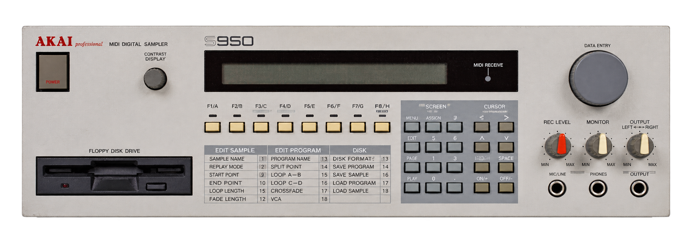
Is Breakbeat a Rhythm or a Genre?
The breakbeat music genre, often shortened simply to the breakbeat genre, is less one fixed sound than a family of club scenes built around broken, syncopated drums. In its broadest sense, a breakbeat is a rhythm built from an exposed drum break or made to move like one. A hip-hop producer, a jungle producer and a 2000s breaks DJ may therefore use the same word while describing different practices.
You can usually hear the distinction before you can name it. A straight house or techno groove places a kick at regular points through the bar; a breakbeat pattern lets the kick, snare and quieter accents answer one another unevenly, creating a push-and-pull rather than a constant march. That audible movement is the shared principle, not one mandatory BPM or drum pattern.
This article follows the genre and the cultures around it rather than teaching drum programming. Readers who want an interactive listening companion can explore Optimal Breaks, whose artist and history pages make it possible to move between styles and hear representative music while browsing. For this guide, the important distinction is simply that a drum break is source material, while breakbeat became both a way of using that material and the name of several connected club traditions.
The site's history of UK electronic music places those traditions beside the other scenes developing around them.
Where Did Breakbeat Come From?
Funk records and the breaks DJs wanted to extend
Breakbeat history starts before anyone used the word as a dance-music genre. Records such as the Winstons' “Amen, Brother”, James Brown's “Funky Drummer”, the Incredible Bongo Band's version of “Apache” and Lyn Collins' “Think (About It)” contained exposed drum passages that DJs and producers could isolate.
These records are not early breakbeat tracks in the modern genre sense. They are sources. Gregory Coleman's six-second solo in “Amen, Brother”, now known as the Amen break, became one of the most reused pieces of recorded rhythm, especially after producers began pitching, chopping and resequencing it.
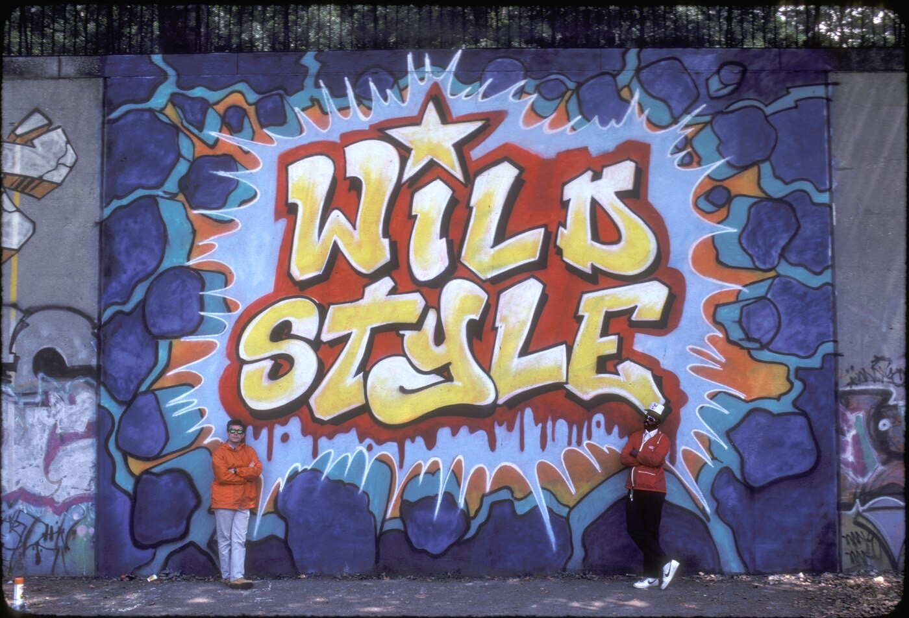
Clyde Stubblefield's playing on “Funky Drummer” offered a different kind of movement, full of small accents and human timing. “Think (About It)” supplied the famous “Woo! Yeah!” vocal and a drum break that could be cut into countless variations. “Apache” connected percussion-heavy funk with the routines of early b-boys and DJs.
The enduring point is not that four records invented everything that followed. It is that recorded drummers became an unofficial vocabulary. Producers could quote that vocabulary, rearrange it and make one performance speak in several musical languages.
Hip-hop DJs turn the break into a method
Kool Herc's use of two copies made the break longer for dancers. Grandmaster Flash and other DJs refined the timing and control of switching between records. This was more than playing a favourite section twice. It turned the playback equipment into an instrument and the structure of an existing record into material for a new performance.
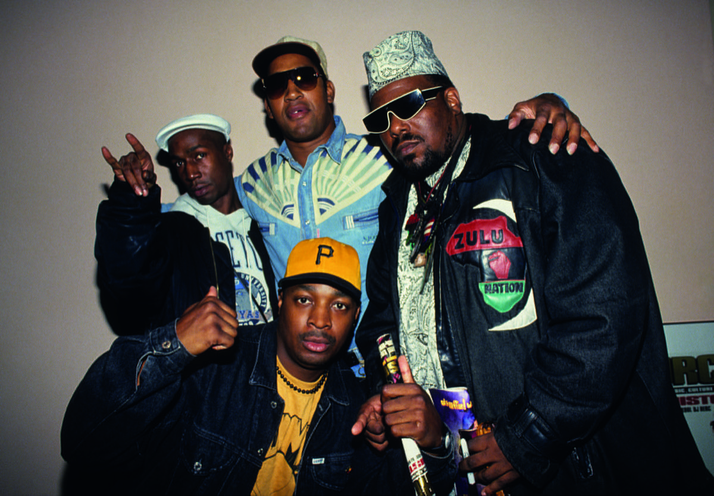
Hip-hop producers carried the same logic into recorded music. A break could be looped as a groove, chopped into separate hits or combined with other fragments. Compilation series such as Ultimate Breaks & Beats made many sought-after drum passages easier to find, while sampling technology made them easier to transform.
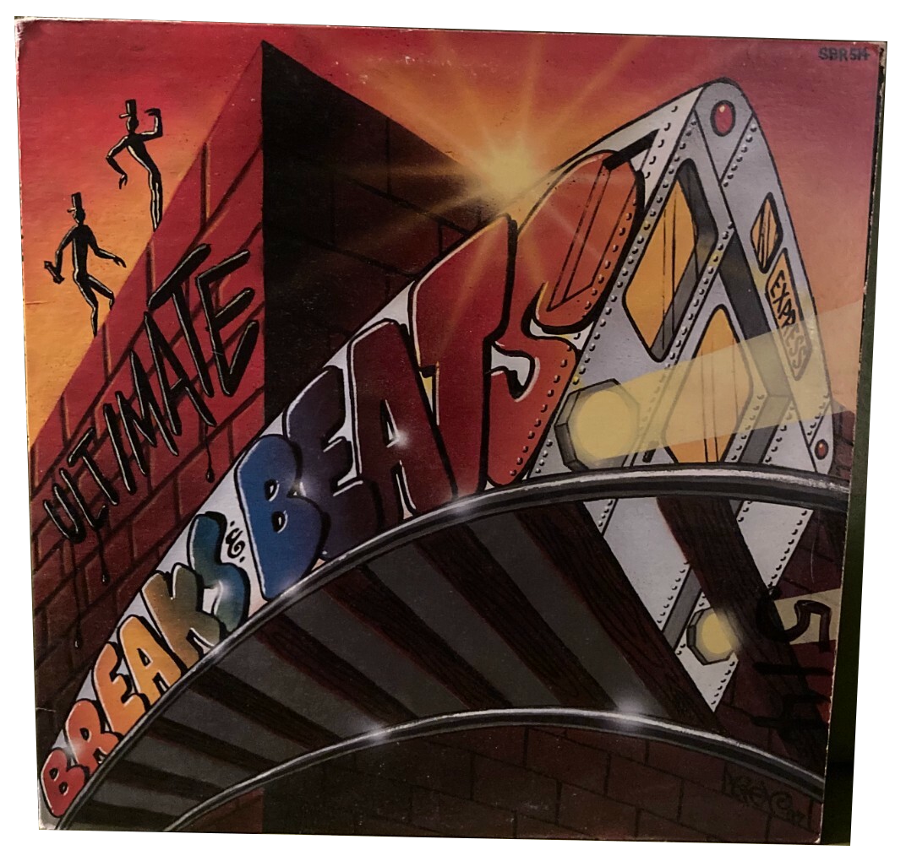
Samplers change what producers can do
Early samplers were limited by memory, sound quality and cost. Those limitations shaped the music: short sampling time favoured compact drum passages, while changes in playback speed altered both pitch and tempo.
Machines from Akai and E-mu, the SP-1200, MPCs and computer sequencing gradually made detailed editing more accessible. In MusicRadar's history of breaks, producers including Krust and Ray Keith describe studio routines that could take hours before modern DAWs reduced the same edits to minutes.
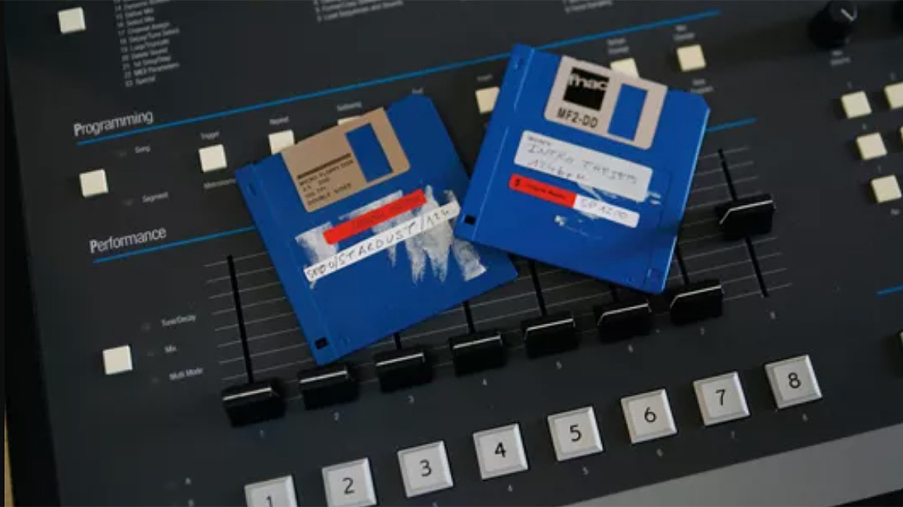
The technology mattered, but it did not dictate one style. Hip-hop producers might keep the groove heavy and spacious. Rave producers could pitch it into a faster, brighter setting. Jungle producers pushed the same principle towards microscopic edits, layered breaks and deep sub-bass.
Broken rhythms enter electronic dance music
During the late 1980s and early 1990s, British producers combined lessons from hip-hop with acid house, techno, reggae, dub and the rapidly changing rave scene. Straight kicks did not disappear overnight. Many transitional records used a four-on-the-floor foundation and breaks at the same time. Others let the sampled drums take over completely.
This is where breakbeat stops being only the history of a technique and becomes the history of scenes. The records were tested in clubs, raves and pirate-radio sets. DJs needed tracks that could move large systems. Producers responded with faster breaks, heavier bass and arrangements designed around drops, rewinds and mixable sections.
BREAKBEAT BEYOND THE CLUB: Games and films carried break-driven electronic music far beyond specialist record shops. Wipeout 2097 placed the Chemical Brothers, the Prodigy and Future Sound of London inside a futuristic racing world; SSX Tricky made big beat, hip-hop and breaks part of the physical excitement of play; and The Matrix soundtrack used artists including the Prodigy and Propellerheads to make broken drums sound inseparable from speed and tension. These soundtracks did not define breakbeat, but they introduced its energy to listeners who had never entered a rave.
How breakbeat travelled and changed.
The map separates parallel scenes instead of pretending every branch followed one British timeline. Lines show strong historical connections, not ownership.
- 1960s–70sRecorded breaks become DJ material
Funk and soul drum passages meet Bronx turntable practice.
- 1988–2002Several local routes form
British rave, central Florida, West Coast clubs and Andalusia organise the same rhythmic idea differently.
- 1990s–2000sBranches become named scenes
Hardcore, jungle, big beat, acid, progressive and nu-skool breaks overlap without becoming one taxonomy.
- TodayThe scene label narrows; the language spreads
Dedicated breaks continue while broken drums circulate through electro, garage, techno, jungle and bass music.
How Breakbeat Became Club Music
There was no single club lineage waiting to be exported around the world. British rave accelerated breaks into hardcore and jungle; central Florida combined them with Miami bass, electro and freestyle; producers elsewhere folded them into acid, progressive and funkier club records; and southern Spain turned imported breaks into a mass regional culture. These routes overlapped through records, touring DJs and labels, but each depended on local rooms and local listeners.
1988–1992: breakbeat enters British rave
The British rave explosion did not begin as a pure breakbeat scene. Acid house, Detroit techno, Belgian new beat, hip-house, electro and UK hip-hop all moved through the same clubs, warehouses and record collections. Producers borrowed freely. As tempos rose, sampled breaks began cutting through piano riffs, hoovers, stabs, sub-bass and voices pitched beyond their natural range.
Shut Up and Dance were crucial because their music connected British hip-hop production with rave before those histories were routinely written as one story. SL2's “DJs Take Control” and “On a Ragga Tip” placed breaks, bass and sampled vocals inside records that crossed from raves into the charts. 2 Bad Mice's “Bombscare” became a model for the dark, spacious pressure of breakbeat hardcore.
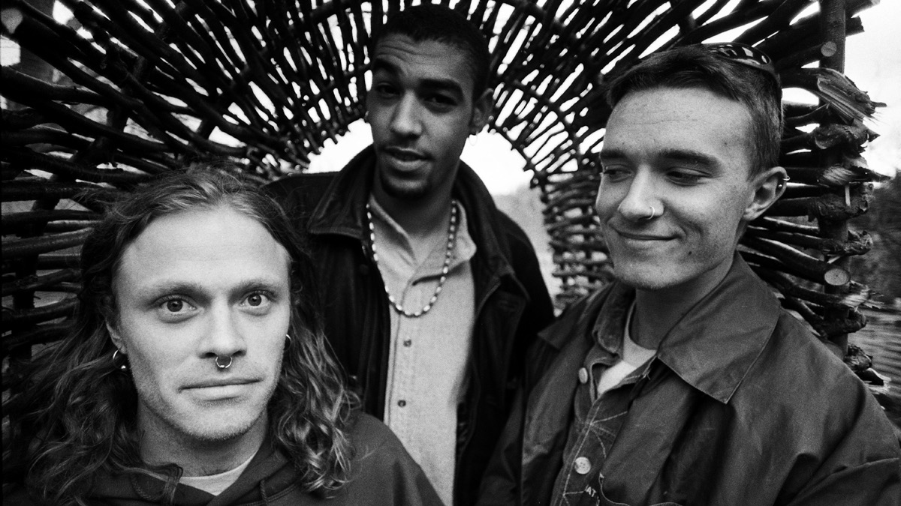
The Prodigy belong here first. “Charly”, released in 1991, was a breakbeat-driven rave record whose cartoon sample helped it reach far beyond the underground. Liam Howlett's contemporary comments also show the tension between its chart success and the rave scene around it. The group's later work crossed into rock, techno and big beat conversations, but reducing the Prodigy to big beat erases the breakbeat-hardcore scene that shaped Howlett's early records.
Altern-8, Sonz of a Loop Da Loop Era, Acen and countless white-label producers show how unstable the category was. Some tracks leaned euphoric, some dark, some towards techno, and others towards reggae bass and faster drum edits. “Breakbeat hardcore” is useful precisely because it names that unstable period before the branches became easier to separate.
Breakbeat hardcore branches into new scenes
By 1992 and 1993, parts of the hardcore scene were moving in different directions. Darker records reduced the pianos and foregrounded ominous samples and sub-bass. Other tracks retained uplifting vocals and became part of happy hardcore. Producers pushing chopped breaks, reggae and dancehall samples, dub techniques and bass weight helped jungle become a distinct Black British culture.
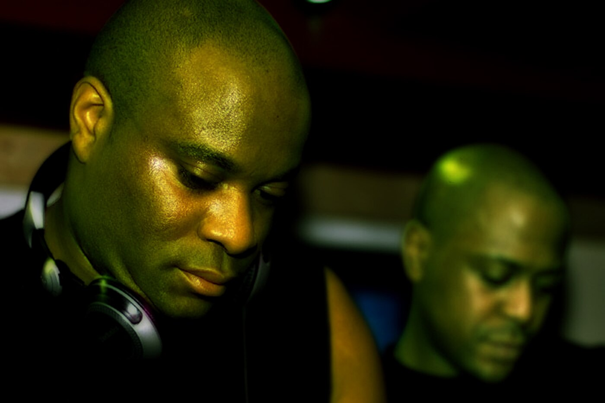
The split was gradual. A record did not become jungle because a calendar changed, and jungle did not simply change its name to drum and bass on a particular day. The terms overlapped while production styles, audiences and industry language shifted. By the middle of the 1990s, drum and bass had become a broad identity of its own, with jungle continuing both as a historical name and a living scene.
That shared history is why jungle and drum and bass belong in a breakbeat guide. It is also why they should not be reduced to breakbeat subgenres. Their relationships to Jamaican sound-system culture, Black British identity, MCs, dubplates, pirate radio and increasingly specialised production created worlds that demand their own account. The site's complete guide to jungle music follows that history in greater depth.
Pirate radio, record shops and dubplates
Breakbeat culture was held together by more than drum patterns. Pirate stations gave DJs somewhere to test unfinished records and gave listeners access to music ignored by licensed radio. Record shops acted as meeting points and informal classification systems. Dubplates let producers hear a track on a system before committing to a full release. Tape packs carried sets beyond the rave itself.
Breakbeat DJing relied on rewinds, double-drops, quick mixing and manual looping. These were not tricks floating above the scene; they were ways records were tested, remembered and passed on. That circulation later moved online through forums, file-sharing networks and specialist blogs, but it served a familiar purpose: keeping music in motion before larger platforms knew what to call it.
Florida breaks builds an American regional sound
Central Florida did not simply import a finished British genre. Around Orlando, nights connected to the Beacham Theatre, AAHZ and later the Edge brought local DJs into contact with Miami bass, freestyle, electro, hip-hop, house and records arriving from the UK. The result became recognisable as Florida or Orlando breaks: bass-heavy, syncopated club music with its own regional circuit.
The history was larger than one artist. Kimball Collins, Dave Cannalte, DJ Stylus, DJ Baby Anne and other local DJs, promoters and record-shop figures helped build the surrounding culture. Orlando Weekly's account of the city's dance-music history identifies Underground Record Source as an important meeting point and places DJ Icey among the central figures of the Florida breaks genre. Its later coverage describes breaks braided from hip-hop, Miami bass and electro as Orlando's own contribution to electronic dance music.
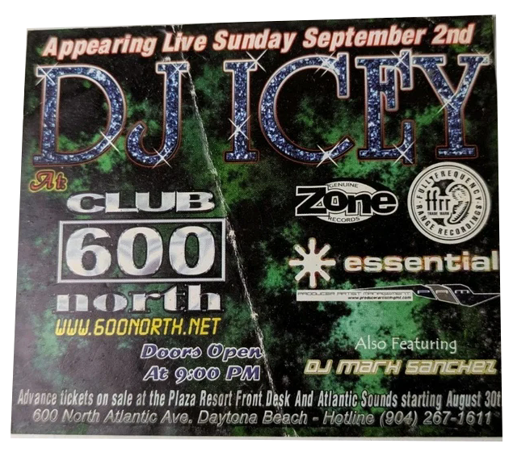
Icey's route shows how that local culture became a production and label network. His official biography traces his influences through freestyle dub mixes, Miami bass, early UK breakbeat, hip-hop and house, followed by an Edge residency and the launch of Zone Records in 1993. Those details matter because Florida breaks was not only a sound. Clubs, stores, labels and regional crowds gave it a name and somewhere to develop.
Florida complicates any story in which breakbeat travels in one direction from New York to Britain and then outward. The same rhythmic language was being reorganised through different bass cultures, record collections and dance floors. Hearing a Florida production beside a UK nu-skool track makes that difference clearer than another list of genre adjectives.
Acid, progressive and West Coast breaks widen the American map
Florida was the clearest named American breaks scene, but it was not the only place where broken club records took root. Across the 1990s, DJs on the West Coast moved between electro, hip-hop, house, acid and British imports without always treating those categories as separate rooms. Labels, record shops and raves around San Francisco and Los Angeles helped establish “West Coast breaks” as a useful, if loose, DJ and record-bin term.
The Hardkiss collective's early-1990s San Francisco history shows how porous that environment was. Their parties and records were usually discussed through house, techno, psychedelia and the wider rave culture rather than one strict breaks formula. Other West Coast-associated producers and DJs, including Bassbin Twins, Überzone and Simply Jeff, pushed harder towards electro, funk and bass-driven breakbeats. The point is not to invent one unified West Coast genre. It is to recognise an American route that sat outside both Orlando's identity and Britain's hardcore lineage.
Acid breaks and progressive breaks were similarly overlapping categories rather than sealed movements. Acid breaks put the Roland TB-303's resonant, sliding bass sound over syncopated drums; progressive breaks stretched the form into longer builds, atmospheric passages and gradual tension. Records could also be sold as funky breaks, chemical beats, progressive house or simply breaks depending on the shop and the DJ. MusicRadar's genre guide captures that instability by describing 303-heavy acid breaks, electro-infused Florida breaks and other modifier-led styles forming around the broader term.
Andalusia turns breakbeat into mass regional culture
One of breakbeat's most important regional histories happened in southern Spain. Between the 1992 Seville Expo and the early 2000s, British records, tourism, local DJs and large venues helped breakbeat become a mass youth culture across Andalusia rather than a specialist import. Seville, Málaga, Granada and the Costa del Sol formed part of a circuit where the music could fill sports halls and large events.
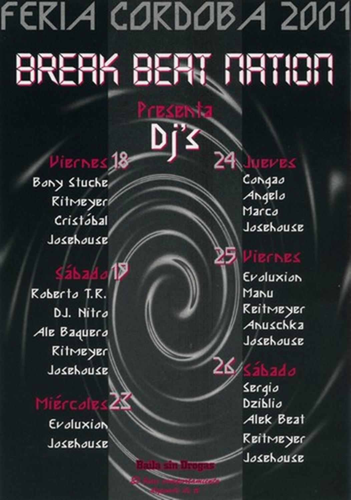
This was not merely a Spanish footnote to a British genre. Local DJs and producers built their own language around nu-skool, progressive, acid and harder breaks, while audiences gave the music an intensity and longevity it did not have everywhere else. David Pareja's 2023 documentary Break Nation calls the period a collective development without an equivalent elsewhere in southern Europe; the Andalusian Film Library synopsis dates its central arc from 1992 to 2002.
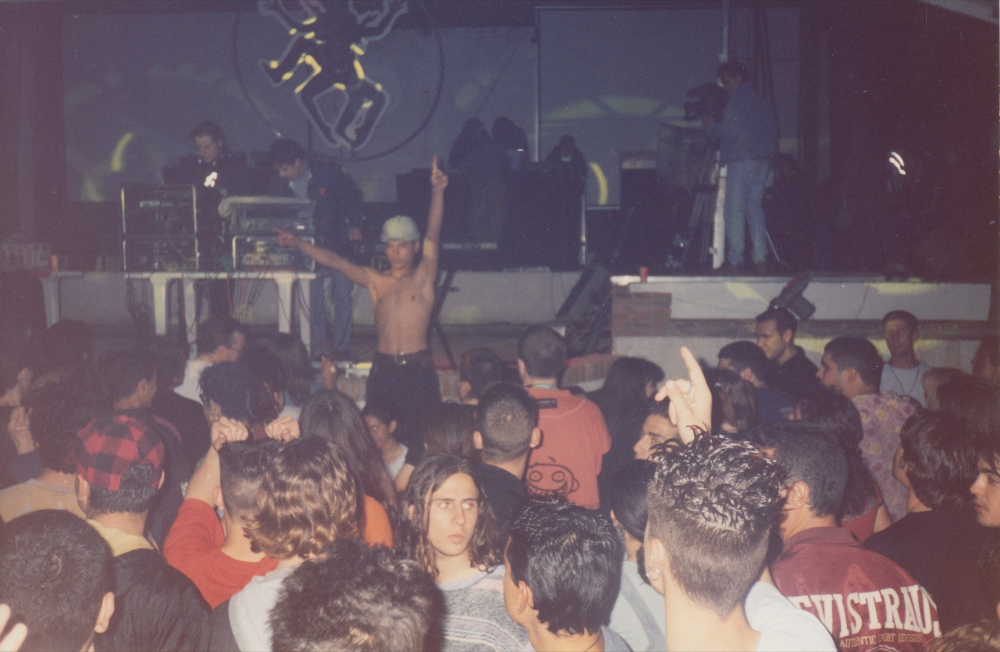
The scene's scale contracted after that peak, but its memory did not disappear. Breakbeat remains unusually bound to regional identity in Andalusia, carried by reunion events, DJs, archives and younger producers. That continuity matters because it shows that genre history is not measured only by British press coverage or international chart success.
Big beat makes break-driven club music visible
Big beat was not simply jungle slowed down or a direct continuation of every hardcore idea. It was a parallel 1990s answer to what break-driven dance music could become, drawing openly from hip-hop loops, acid, rock, funk and festival-scale production.
The Chemical Brothers made breaks feel huge without hiding their psychedelic and club roots. Fatboy Slim turned sample collage into pop architecture. Propellerheads and Bentley Rhythm Ace approached the idea from different angles, while the Prodigy's later crossover records shared audiences and press language with big beat without fitting neatly inside it.
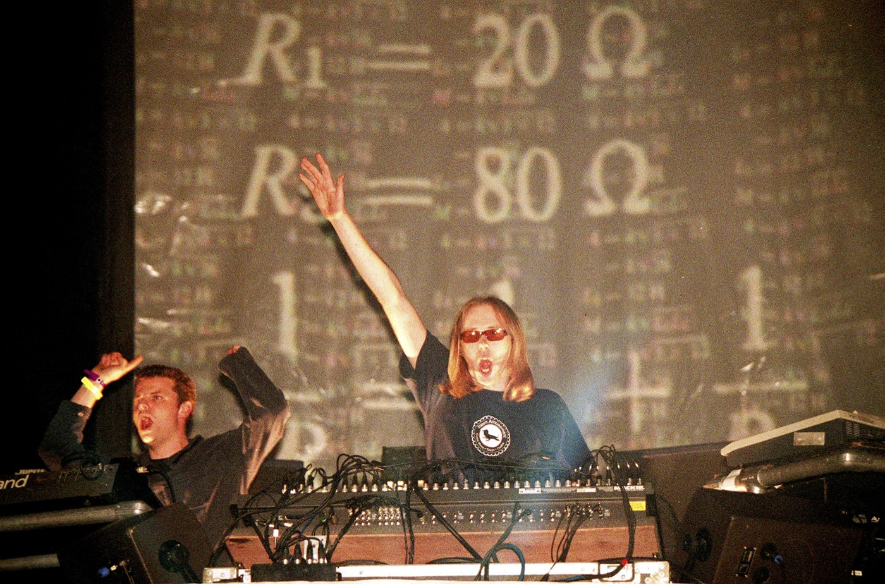
The commercial success of these artists made broken drums familiar to listeners who might never have bought a jungle twelve-inch or attended a breaks night. It also caused a lasting terminology problem: for some listeners, “breakbeat” still means any 1990s electronic record with loud sampled drums. The dedicated breaks scene was narrower and developed its own identity.
Nu-skool breaks builds a dedicated circuit
By the late 1990s and early 2000s, “breaks” often referred to a more clearly defined club sound. Nu-skool breaks tightened the low end, embraced digital editing and pulled from electro, techno, hip-hop and progressive club music. Adam Freeland, Plump DJs, Stanton Warriors, Rennie Pilgrem, Hybrid, Krafty Kuts and the Freestylers represented different sides of the scene.
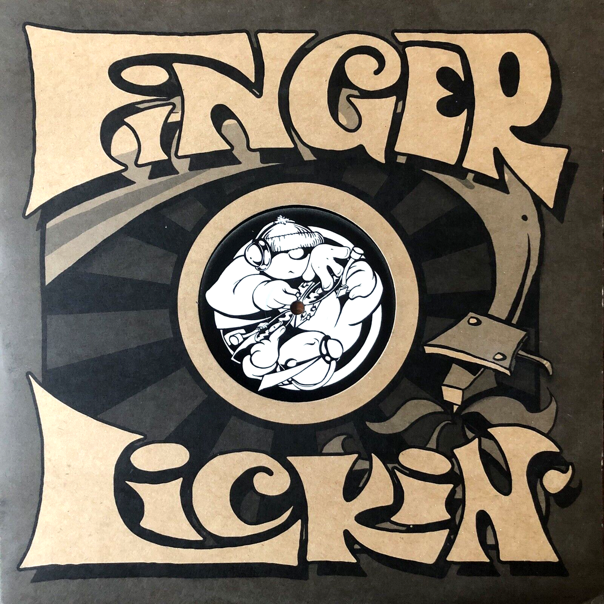
This was music built for its own nights, labels, record-shop sections and awards. Finger Lickin' Records became closely associated with the funkier end of the sound. Marine Parade, TCR and Botchit & Scarper helped establish other variations. The category was never uniform, but it was more specific than the broad historical meaning of breakbeat.
Its later loss of mainstream visibility should not be turned into a simple story of death and revival. Scenes contracted, labels changed and other club sounds became dominant, but breaks continued through local communities, producers and DJs. The rhythm also kept travelling under different names.
Why the dedicated breaks circuit became less visible
The early-2000s breaks scene had the infrastructure of a mature genre: specialist labels, club nights, magazines, awards and an international touring circuit. That visibility also made its centre easier to see when it began to contract. By the later 2000s, dubstep, electro-house and other bass-heavy club styles were attracting more press, bookings and younger producers, while parts of the breaks audience fragmented across adjacent scenes.
No single event killed the genre. Some of its most recognisable production habits had become tied to a particular period; independent labels faced the wider collapse of vinyl economics; and producers who once sat together under “breaks” increasingly appeared under electro, bass music, techno, garage or dubstep. The tools had also changed. As detailed editing became standard inside DAWs, broken drums no longer signalled membership in one specialist scene as clearly as they once had.
The result was a loss of category power, not the disappearance of the music. Florida and Andalusia retained strong local memories. Established artists kept touring. New records continued to appear, but “breakbeat” was less often the single banner under which every related artist, promoter and listener gathered. That distinction explains how a genre can leave the mainstream centre while its methods spread almost everywhere.
Breakbeat Styles: Hardcore, Florida, Big Beat, Nu-Skool and More
The breaks family is not a clean taxonomy. Some names describe strong local scenes, some describe a period, and others are useful record-shop categories. The examples below are starting points rather than claims that every record in a style sounds the same.
Breakbeat hardcore
Breakbeat hardcore describes the fast, sample-heavy UK rave music of the early 1990s. It often combined breaks with four-on-the-floor kicks, piano riffs, stabs, pitched vocals and sub-bass. SL2, 2 Bad Mice, Acen and early Prodigy records offer different entry points.
Florida breaks
Florida breaks, also called Orlando breaks in some accounts, combined the central-Florida club circuit with Miami bass, electro, freestyle, hip-hop, house and imported UK records. The sound ranged widely, but its regional identity was real and sustained by clubs, stores, labels and local DJs.
Big beat
Big beat was the most visible 1990s crossover branch of break-driven club music. Large loops, acid, hip-hop sampling and rock-scale dynamics connected clubs, festivals and mainstream radio. Its audience and media history were broader than the dedicated breaks circuit, but excluding it would leave a major part of breakbeat's public history unexplained.
Nu-skool breaks
Nu-skool breaks became a strong late-1990s and 2000s club category, generally heavier and more digitally sculpted than earlier breakbeat records. Plump DJs, Stanton Warriors, Adam Freeland and Rennie Pilgrem are central names, although their records do not all sound alike.
Acid and progressive breaks
Acid breaks joins the unstable movement of breakbeat drums to the sliding, resonant sound of the Roland TB-303. Progressive breaks tends towards longer arrangements, layered atmospheres and tension built over several minutes. Both names overlap with other 1990s and 2000s club categories, so they work best as listening coordinates rather than rigid borders.
Contemporary breaks
Contemporary breaks is a practical, loose label for current club music that foregrounds broken drums while drawing from electro, garage, bass music, trance, rave and techno. It is less a single movement than a useful record-shop and DJ category.
Breakbeat techno
Breakbeat techno usually describes techno whose main drum movement is broken rather than straight. In some places it functions as a scene label; elsewhere it is simply a description. Artists may move between straight techno and breaks within the same set or release.
Related styles that are not simple synonyms
Jungle and drum and bass grew from breakbeat-hardcore techniques but developed distinct cultures, tempo expectations and approaches to bass and break editing. Jungle's reggae, dub and dancehall connections are especially important. Calling every jungle track “breakbeat” may be technically understandable but culturally unhelpful.
Broken beat emerged around West London producers and DJs including Bugz in the Attic and IG Culture. Its rhythms draw on jazz, funk, soul and electronic production, often with a looser, more harmonically active feel than club breaks. The similar name hides a different scene.
Breakcore pushes chopped breaks towards extreme density, distortion, hardcore pressure and abrupt structural change. Alec Empire, Venetian Snares and later online communities represent very different phases of the term. Fast jungle or emotional drum and bass is not automatically breakcore, despite loose tagging on streaming and social platforms.
Breakbeat vs Jungle, Drum and Bass, Big Beat and Broken Beat
Genre boundaries are working agreements, not measurements. BPM ranges overlap, artists change direction and the same record may be filed differently in London, Florida or an online store. The table is a listening guide, not a set of laws.
| Style | Rhythmic character | Approximate tempo area | Historical context | Representative names | Clearest distinction |
|---|---|---|---|---|---|
| Breakbeat / breaks | Syncopated club drums, sampled or programmed | 120–140 BPM is common, but not universal | UK, US and international club scenes | Stanton Warriors, Plump DJs, DJ Icey | The broad club category centred on broken rhythms |
| Breakbeat hardcore | Fast breaks, rave stabs, pianos and sub-bass | Roughly 140–160+ BPM | Early-1990s UK rave | SL2, 2 Bad Mice, Acen | Transitional hardcore sound before later branches stabilised |
| Jungle | Highly edited breaks, reggae and dub influence, deep sub-bass | Roughly 150–170 BPM | Early-1990s Black British rave culture | 4hero, Remarc, Shy FX | Distinct sound-system, MC and dubplate culture |
| Drum and bass | Fast break-based drums with many specialised production styles | Roughly 160–180 BPM | Mid-1990s onward | Goldie, Photek, LTJ Bukem | A broad scene and genre identity beyond the general breaks category |
| Big beat | Large loops, acid, rock dynamics and sample collage | Often 100–140 BPM | 1990s crossover club and festival culture | Chemical Brothers, Fatboy Slim | More loop-led and crossover-facing than dedicated breaks |
| Acid / progressive breaks | Broken drums with 303 lines or long, atmospheric builds | Often 120–140 BPM | Overlapping 1990s–2000s club circuits | Chemical Brothers, Hybrid, early breaks DJs | Modifier-led styles rather than one unified regional scene |
| Broken beat | Loose, syncopated rhythm with jazz, soul and funk harmony | Often 90–130 BPM | Late-1990s and 2000s West London | IG Culture, Bugz in the Attic | A separate scene with a different rhythmic and harmonic language |
| Breakcore | Hyper-edited breaks, hardcore intensity, distortion and rupture | Commonly 160 BPM and above, but highly variable | 1990s onward, international underground | Alec Empire, Venetian Snares | More extreme editing and structure than breaks or jungle |
| Breakbeat techno | Techno arrangement and sound design built around broken drums | Often 125–150 BPM | Several contemporary regional scenes | Varies by scene | Techno framework with a broken rather than straight pulse |
Breakbeat Today
Breaks return without one unified revival
Broken drums have become more visible again across electronic music, but there is no single organisation, city or sound that owns the return. Some producers identify their tracks as breaks. Others work through electro, UK bass, techno, garage, jungle or rave and simply choose a broken pulse when the track needs one.
That distinction matters. Calling every syncopated club record “the breakbeat revival” makes the present look tidier than it is. Bicep, Overmono and Special Request can all appear in a breaks conversation, but they arrived through different histories and do not make the same genre.
Contemporary techno DJs increasingly mix straight and broken records in one set. Garage producers stretch swing into heavier bass music. Electro continues to offer an alternative to four-on-the-floor club structure. Younger rave producers reuse hardcore signifiers while working with modern low end and much cleaner editing.
The present is also geographically wider than the most visible British revival narrative suggests. Florida still supports breaks events and artists, Andalusia treats the music as part of its regional club memory, and producers across continental Europe, Australia and the Americas move between breaks, electro and bass music. Online stores and playlists gather those records under broad categories, but DJs often connect them more convincingly than the tags do.
Why breakbeat still travels between scenes
Breakbeat survives partly because it does not require loyalty to one scene. A producer can use chopped drums for one track and return to a straight kick on the next. A DJ can use a breakbeat record to change the physical movement of a set without changing the entire musical direction.
That flexibility is more convincing than talk of a single universal revival. Breakbeat keeps resurfacing because it changes the way a room moves: it can loosen a rigid techno set, bridge garage and electro, or recall rave history without reproducing an old record wholesale. The continuity is not one scene returning intact. It is a rhythmic idea finding new scenes to work inside.
Frequently asked questions.
What is breakbeat music?
Breakbeat music uses syncopated, interrupted or rearranged drum patterns instead of relying on a continuous four-on-the-floor kick. The term can describe both a rhythmic technique and electronic dance genres built around broken drums.
Is breakbeat a genre or a rhythm?
It is both. Breakbeat first describes a rhythmic approach based on breaks, especially drum sections extended or sampled from existing records. Breakbeat and breaks later became genre labels for club music centred on that rhythmic approach.
What is the difference between breakbeat and breaks?
The words often overlap. “Breakbeat” can refer to the rhythm, the wider history or the genre. “Breaks” became especially common for the late-1990s and 2000s club sound associated with artists such as Plump DJs and Stanton Warriors.
What BPM is breakbeat?
There is no fixed breakbeat BPM. Many club breaks tracks fall around 120–140 BPM, while breakbeat hardcore, jungle and drum and bass use related techniques at faster tempos. Rhythm, production and scene context are more useful than tempo alone.
Is breakbeat the same as drum and bass?
No. Drum and bass grew from breakbeat-based rave and jungle, but it developed its own production language, scenes and typical tempo range. Breakbeat is a broader rhythmic idea and also a separate family of club genres.
Is jungle a type of breakbeat?
Jungle is built around breakbeats and emerged from breakbeat hardcore, but calling it only a breakbeat subgenre misses its distinct Black British, reggae, dub, dancehall, MC and sound-system history.
What is the difference between breakbeat and big beat?
Big beat is a related 1990s genre known for large drum loops, hip-hop samples, acid sounds and crossover production. Breakbeat is the broader rhythmic concept, while breaks also names a more dedicated club scene that extended beyond big beat.
Who are the best-known breakbeat artists?
The answer depends on the era. Key names include Shut Up and Dance, SL2, 2 Bad Mice, The Chemical Brothers, DJ Icey, Adam Freeland, Plump DJs, Stanton Warriors, Hybrid and the Freestylers. Jungle and drum and bass have their own essential artists.
Is breakbeat still being made today?
Yes. Producers still release music explicitly labelled as breaks, while breakbeat rhythms also appear throughout electro, UK bass, garage, techno, jungle and contemporary rave music.
Sources.
Historical research
- Library of Congress, “Early Hip-Hop at the Library of Congress” and Citizen DJ materials on Kool Herc and break-based DJ practice.
- MusicRadar, “The History of Breaks in Music Production”.
- MusicRadar, “The Beginner's Guide to Breakbeat”.
- Red Bull Music Academy Daily, “Experimentation All the Way: An Interview with Shut Up and Dance”.
- Bill Brewster and Frank Broughton, Last Night a DJ Saved My Life.
- Simon Reynolds, Energy Flash.
Records, scenes and regional histories
- Orlando Weekly, “Dance Dance Revolution” on Orlando clubs, Underground Record Source and the Florida breaks scene.
- Orlando Weekly, “AAHZ Respects the Breaks That Made Orlando Global”.
- DJ Icey's official biography on his influences, Edge residency and Zone Records.
- Hardkiss, The Magical Sound of the San Francisco Underground on the early Bay Area rave network.
- Diario de Sevilla, interview with Break Nation director David Pareja on the Andalusian scene from 1992 to 2002.
- Filmoteca de Andalucía, Break Nation programme and synopsis.
- Official Charts Company, Stanton Warriors — “Da Antidote”.
- Pitchfork, Skee Mask — “50 Euro to Break Boost”.
- thecatrave's history of UK electronic music and complete guide to jungle music.
Continue reading
Read next.
 A02Guide / Jungle / ~18 min
A02Guide / Jungle / ~18 minJungle Music: From Roots to Revival
Pirate radio, dubplates, MC energy and the global return of a distinctly Black British sound.
Read article → A03Timeline / UK music / ~27 min
A03Timeline / UK music / ~27 minThe Evolution of UK Electronic Music
Ten sounds that travelled from regional underground scenes into global culture.
Read article →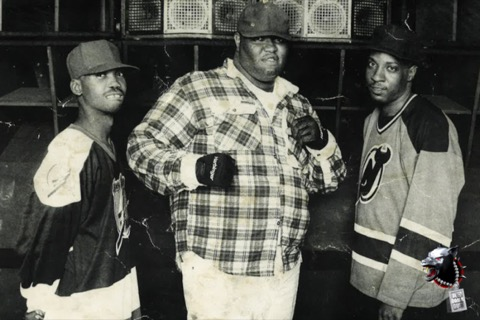
A04Guide / Bass music / ~20 minWhat Is Bass Music? History, Genres and Essential Tracks
A global history connecting Jamaica, Miami, Britain, Los Angeles, Chicago, Durban and today’s hybrid club culture.
Read article → A05Guide / Dubstep / ~12 min
A05Guide / Dubstep / ~12 minWhat Is Dubstep? Origins, Sound and the Genre Split
From south London record shops and 200-capacity basements to a genre that split into two sounds sharing one name.
Read article →